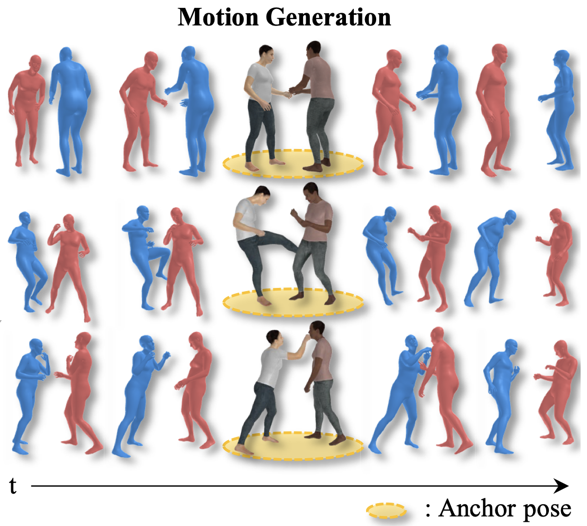
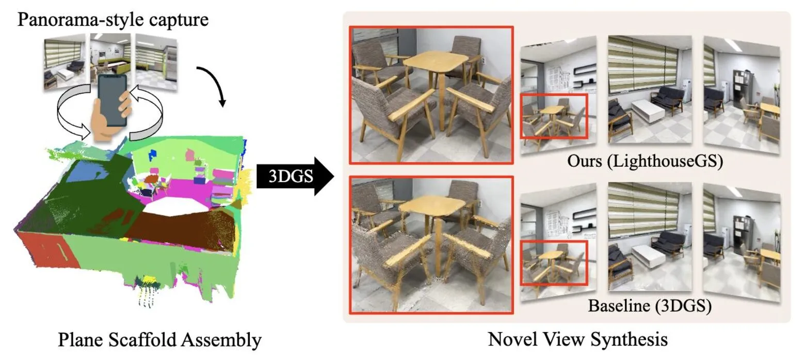

|
Jaehoon Jang wkdwogns1997@gmail.com I am an AI researcher at Smilegate AI. I received my Master's degree from the 3D Vision & Robotics lab at UNIST, supervised by Prof. Kyungdon Joo. My primary research focuses on creating 3D worlds through neural rendering, implicit neural representations, and generative models, while extending these techniques to real-world applications in robotics and gaming. I was a visiting scholar at Visual Computing Group, Harvard, supervised by Prof. Hanspeter Pfister, and working closely with Dr. Wanhua Li. CV | Email | LinkedIn | Google Scholar | GitHub |
Experience |
|
|
Smilegate AI Center - Generative AI Researcher, Pangyo, South Korea
Sep '25 - Present
Working on 3D asset generation and animation |
|
|
Harvard University - Visiting Scholar, Cambridge, MA, USA
Sep '24 - Dec '24
Working on feed-forward 3DGS (Advisor: Wanhua Li) |
|
UNIST - M.S. Candidate, Ulsan, South Korea
Mar '22 - Feb '25
Advisor: Kyungdon Joo |
Research |
|

|
Physical Interaction-Guided 3D Human Motion Generation
Dongjun Gu, Jaehyeok Shim, Jaehoon Jang, Changwoo Kang, Kyungdon Joo In preparation
|
|

|
LighthouseGS: Indoor Structure-aware 3D Gaussian Splatting for Panorama-Style Mobile Captures
Seungoh Han*, Jaehoon Jang*, Hyunsu Kim, Jaeheung Surh, Hyowon Ha‡, Kyungdon Joo‡ WACV 2026 [ Project page | Paper ] LighthouseGS proposes a practical 3DGS framework for panorama-style mobile captures of indoor scenes, leveraging the prevalent planar structures in such environments. |

|
AiSDF: Structure-aware Neural Signed Distance Fields in Indoor Scenes
Jaehoon Jang*, Inha Lee*, Minje Kim, Kyungdon Joo ICRA 2025 / RA-L 2024 [ Project page | Paper ] Given a stream of posed depth images, we propose a structure-aware online SDF reconstruction framework for indoor scenes under the Atlanta world assumption. |

|
ContactGen: Contact-Guided Interactive 3D Human Generation for Partners
Dongjun Gu, Jaehyeok Shim, Jaehoon Jang, Changwoo Kang, Kyungdon Joo AAAI 2024 [ Project page | Paper ] Generating a interactive 3D human avatar considering physical contact. |
Awards |
Projects |
Academic Services |
|
Template from this website. |